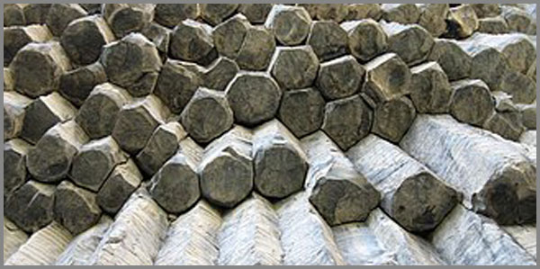

37. 60-ԱԿԱՆ ԷՍԹԵՏԻԿԱՆ ՃԱՐՏԱՐԱՊԵՏՈՒԹՅԱՆ ԵՎ ԴԻԶԱՅՆԻ ՄԵՋ ԿԱՄ 60-ԱԿԱՆ ՏԱՐԱԾՈՒԹՅԱՆ ՁԵՎԱՎՈՐՄԱՆ ՏԵՍՈՒԹՅՈՒՆ
 |
Դեկարտյան մեխանիկան տարածությունը սահմանեց երեք միատարր առանցքներով՝ ենթադրելով, որ ցանկացած ծավալ կարելի է չափել միատեսակ նոմինալներով։ Սակայն, եթե ռելյատիվիստական ֆիզիկայում տարածությունն ու ժամանակը կորանում են միայն մեծ զանգվածների ազդեցությամբ, ապա բանականության և ձևի հարաբերության մեջ տարածությունը ենթարկվում է այլ օրենքների։ Իսկական կացարանը, տունը՝ ոչ թե պատերի մեխանիկական շարվածք պիտի լինի, այլ որակական հոսքերի տեղաբաշխում: Սա 60-ական համակարգի գործնական նյութականացման պրակտիկան է:
Այսօր մարդիկ բնակվում է տասական տուփերում, որոնք կառուցված են բացարձակ ուղիղ գծերի և սառը սիմետրիայի վրա: Սակայն բնության մեջ ուղիղ գծեր չկան: Բենզոլի օղակի (C₆H₆) կառուցվածքից մինչև բազալտե վեցանկյուն սյուների երկրաբանական կայունությունը կառուցվում է միևնույն 60-ական կմախքով:
Այս տրակտատը տեսական բանաձևերը և գաղափարները ֆիզիկական դաշտ տեղափոխելու և ձև տալու փորձ է: Մենք 39 տառիմաստները քարտեզագրելու ենք որպես տարածության հանգույցներ, 12 նոտաների միջոցով պատերի մեջ կձևավորենք 432 Հց ռեզոնանսով ակուստիկա, իսկ տեսանելի լույսի մուտքը դեպի համակարգ կապահովենք 7 դռներով: Այս ամենի կայունությունն ու կենդանի շունչը ապահովվելու է Ֆայի էֆեկտով պայմանավորված մինչև 6.66% օրգանական շեղումով, որը տարածությանը կտա կենդանի շնչառություն:
Սա ներքնաշխարհի ճարտարապետությունն ապահովող մատնեմատիկան է: Մի միջավայր, որտեղ մարդու «Ես»-ը դառնում է այն կետը, ուր Տիեզերքը ճանաչում է իր սեփական ձևը՝ ուղիղ ռեզոնանսի մեջ մտնելով Մեծ Պայթյունից եկած տիեզերական ձևի հետ, որովհետև այն ամենը, ինչ մարդը կառուցում է իրենից դուրս, իրականում նրա ներքին տարածության պրոյեկցիան ու կերպարանքն է։ Դարեր շարունակ մարդկությունը բնակության վայրեր հիմնելիս անգիտակցաբար փնտրել է այնպիսի ձևեր, որոնք ոչ թե պարզապես պատսպարում են մարմինը ցրտից ու քամուց, այլ ռեզոնանսի մեջ են մտնում տիեզերական լռության և արարման ընդհանուր ռիթմի հետ։ Քարահունջի անշարժ փարոսներից մինչև հայկական տաճարների կամարները, ճարտարապետությունը եղել է ոչ թե քարերի մեխանիկական դասավորություն, այլ Բանի նյութականացում և նախնական իմաստների տարածական բացում։
Սակայն ժամանակակից աշխարհը կանգնած է էսթետիկական և ինֆորմացիոն խորը ճգնաժամի մեջ։ Մարդը հայտնվել է իր իսկ կառուցած արհեստական, չոր ու անկյունավոր միջավայրի գերության մեջ, որը կտրված է բնության կենդանի ֆրակտալներից և տիեզերական համամասնություններից։ Մենք չափում ենք տարածությունը մի համակարգով, որը չի շնչում, և բնակվում ենք տուփերում, որոնք դատարկում են մեր լեզուն ու բանականությունը։
Եթե տասական տուփը մարդուն պարտադրում է կաղապարված գոյություն, ապա վաթսունական գործիքակազմը տարածությունը վերածում է բանականության բնական տարածքի։
Տասական տուփի գերությունը
1961 թվականին դանիացի ֆիզիկոս Ակե Ստենհոլմը չափեց բազալտե սյուները, որոնք առաջացել էին լավայի սառչելուց։ Նա չէր փնտրում վեցանկյուն։ Նա ուղղակի չափում էր անկյունները և տեսավ, որ դրանք վեցն են։ Այդ նույն ժամանակ, երբ Ստենհոլմը հրապարակում էր իր չափումները, մի այլ տեղ՝ ամբողջովին այլ ոլորտում արձանագրեցին, որ ջրի մոլեկուլը սառչելիս նույնպես առաջանում է վեց ճառագայթ։ Սա վաղուց հայտնի էր։ Բայց ոչ ոք չէր հարցրել թե ինչու հենց վեց։ Մի քանի տարի դրանից առաջ, երբ մոլեկուլային կենսաբանները կարդացին ԴՆԹ-ի կոդը, պարզվեց, որ 64 կոդոններից 3-ը ստոպ կոդոններ են և մնում է 61 ակտիվ կոդոն։ Ոչ 60, ոչ 62։ 61։
Եվ ամեն անգամ, երբ գիտությունը հանդիպում է այս թվերին, անցնում է դրանց կողքով, որովհետև չունի մի համակարգ, որի մեջ դրանք կտեղավորվեին։ Վեցանկյունը, 61-ը, 12-ը, 7-ը՝ դրանք բոլորը պատահական են թվում գիտության համար։ Բայց պատահականությունը մի բան է, իսկ այն, որ գիտությունը այդ թվերին վերագրում է պատահակնության հատկանիշ մեկ այլ բան է և դա արվում է այն պատճառով, որ չի գտնվում այս թվերի կապը որևէ բանի հետ։
Սույն աշխատությունը փորձ է ցույց տալու, որ կապը կա։ Եվ այդ կապը 60-ական համակարգն է։ Այն համակարգը, որը Շումերները գրեցին կավե սալիկների վրա, որը Մայաները դրեցին օրացույցի մեջ, որը Չինաստանում դարձավ 60-ամյա ցիկլ, և որը մինչ օրս ապրում է մեր ժամացույցի րոպեների, մեր շրջանի 360 աստիճանների, մեր երաժշտության 12 կիսատոների մեջ։
Այս աշխատությունը չի պնդում, որ 60-ը միակ ճշմարիտ թիվն է։ Այն չի ասում, որ մնացած ամեն ինչ սխալ է։ Այն ցույց է տալիս, որ 60-ական համակարգը կա, որ այն աշխատում է, և որ այն կարելի է կիրառել նաև ճարտարապետության և դիզայնի մեջ։
Այդ կիրառումը ենթադրում է մի քանի բան։
Առաջինը՝ տարածությունը չպետք է լինի միատարր։ Դեկարտյան երեք առանցքները, որոնք չափվում են նույն միավորով, ստեղծում են տուփ։ 60-ական համակարգում տարածությունը տարասեռ է։ Տարբեր ուղղություններ ունեն տարբեր որակ, տարբեր չափ, տարբեր դեր։
Երկրորդը՝ տարածությունը պետք է կրի լեզվի հետքը։ Հայերենի 39 տառերը, որոնցից յուրաքանչյուրը կրում է իր իմաստը և ունի իր հնչողությունը, կարող են դառնալ տարածության հանգույցներ, որպես կառուցվածքային տարրեր։
Երրորդը՝ տարածությունը պետք է շնչի։ Այն պիտի լինի ոչ թե կատարյալ սիմետրիկ, այլ պիտի ունենա Ֆայի էֆեկտով պայմանավորված մինչև 6.66% շեղում։ Դա այն փոքրիկ անկատարությունն է, որը թույլ է տալիս տարածությանը լինել կենդանի, ոչ թե սառած։
Չորրորդը՝ տարածությունը պետք է հնչի։ 12 երաժշտական կիսատոները կարող են դառնալ պատերի, կամարների, ծավալների համամասնություններ, որոնք 432 Հց ռեզոնանսով լցնում են սենյակը ոչ թե աղմուկով, այլ մաքրությամբ, որի մեջ լսվում է շունչը։
Հինգերորդը՝ տարածությունը պետք է լույս ընդունի 7 կետերից, որոնք տեղակայված են ըստ արևի ընթացքի։
Վեցերորդը՝ տարածությունը պետք է լինի մատնեմատիկ։ Ոչ թե չափվող այլ զգացվող։
Յոթերորդը՝ այս ամենը պետք է ապացուցվի փաստերով, այլ ոչ թե ընդունվի հավատով։
Սույն աշխատության նպատակը ոչ թե համոզելն է, այլ ցույց տալը։ Եվ եթե այն ինչ-որ մեկի մեջ արթնացնի մի հարց, մի կասկած, մի ցանկություն նայելու այն ամենին, ինչ մինչ այժմ համարվել է պատահական, ապա այն արդեն արել է իր գործը։
Այժմ՝ երբ հողը պատրաստ է, կարող ենք անցնել առաջ՝ դեպի չափելի իրականություն։
Մարդը նստած է սենյակում։ Սենյակը չորս պատ ունի։ Պատերը ուղիղ են, անկյունները՝ 90 աստիճան։ Հատակը հարթ է։ Առաստաղը հարթ է։ Պատուհանը ուղղանկյուն է։
Նա չգիտի, որ այս սենյակը իր վրա ազդում է։ Նա կարծում է, որ սենյակը պարզապես տարածք է, որի մեջ ինքը գտնվում է։ Բայց սենյակը ոչ թե պարունակում է նրան, այլ ձևավորում է նրան։
Վերցնենք մի սովորական սենյակ՝ 4 × 5 × 3 մետր չափերով։ Օդում ձայնի արագությունը 20°C ջերմաստիճանում մոտավորապես 343 մ/վ է (0°C-ում՝ 331 մ/վ)։ Կանգուն ալիքների հիմնական հաճախականությունները պատերի նկատմամբ հաշվելի են հետևյալ կերպ՝
343 / (2 × 4) = 42.88 Հց
343 / (2 × 5) = 34.30 Հց
343 / (2 × 3) = 57.17 Հց
Այս հաճախականությունները և դրանց բազմապատիկները ուժեղանում են։ Մյուսները թուլանում են։ Արդյունքում սենյակը ունի ձայնային ստորագրություն՝ որոշ նոտաներ հնչում են ավելի բարձր, որոշները՝ ավելի ցածր։
Սա նշանակում է, որ ուղղանկյուն սենյակը մարդուն ստիպում է լսել ոչ թե ամբողջ ձայնը, այլ միայն դրա մի մասը, այնպես ինչպես երբ մարդը նայում է պատուհանից և տեսնում է միայն երկնքի մի կտորը, այնպես էլ նա լսում է ձայնի մի կտորը։ Եվ այդ կտրվածքը ոչ թե պատահական է, այլ չափելի։ Դա կարելի է գրանցել դեցիբելաչափով սենյակի ցանկացած կետում, իսկ կառուցված գրաֆիկը ցույց կտա առաջացած պիկերի և դատարկությունների դասավորությունը։
Բայց այստեղ կա մի շատ կարևոր նրբություն, որը պետք է նկատել։ Ձայնի արագությունը օդում կախված է ջերմաստիճանից, խոնավությունից և ճնշումից։ Այն տատանվում է մոտ 330–343 մ/վ սահմաններում։ 330-ից 343 տարբերությունը 13 է։ 13 / 330 × 100 = 3.94%։ 13 / 343 × 100 = 3.79%։ Այսինքն՝ ձայնի արագության տատանումը բնական պայմաններում կազմում է մոտ 3.8%–ից 3.9%, որը Ֆայի էֆեկտի սահմաններում է (մինչև 6.66%)։
Սա նշանակում է, որ բնությունը ձայնի արագությունը պահում է Ֆայի էֆեկտի շրջանակում՝ չթողնելով, որ այն դուրս գա կենդանի ներդաշնակությունից։ Որքան էլ պայմանները փոխվեն, ձայնի արագությունը միշտ մնում է այդ նեղ միջակայքում, որը 60-ական համակարգի կենդանի շնչի դրսևորումն է։
Եվ սա միայն ակուստիկայի մասին չէ։ Սա ցույց է տալիս, որ նույնիսկ ամենափոփոխական բնական երևույթները ենթարկվում են նույն օրենքին, որը մենք տեսնում ենք 61 ակտիվ կոդոնի մեջ, Ֆայի էֆեկտի շեղման մեջ, 432 Հց-ի ներդաշնակության մեջ։ Կենդանի բանը միշտ մի փոքր շեղված է, մի փոքր ավելորդ, մի փոքր անավարտ։ Եվ այդ շեղումը երբեք չի գերազանցում այդ էֆեկտի սահմանաչափը։
Սա դեռ ամենը չէ։ Մարդու աչքը շարժվում է սակադաներով՝ արագ ցատկերով մի կետից մյուսը։ Ուղեղը ստանում է պատկերի միայն այն հատվածները, որոնք արժանի են ուշադրության։ Ուղիղ գծերը կրկնվող են։ Երբ աչքը հանդիպում է ուղիղ գծերի ցանցին, ուղեղը արագ ճանաչում է օրինաչափությունը և դադարում է ուշադրություն դարձնել։ Կոր գծերը կրկնվող չեն։ Ամեն կոր տարբեր է։ Ուղեղը ստիպված է ամեն անգամ նորից մշակել պատկերը։
Ահա թե ինչու մարդը ուղղանկյուն սենյակում ավելի արագ է հոգնում, քան կլոր սենյակում։ Դա չի զգացվում մեկ րոպեում։ Դա զգացվում է ժամեր անց, երբ մարդը հանկարծ հասկանում է, որ չի կարողանում կենտրոնանալ, որ միտքը ցրվում է, որ աչքերը հոգնել են։ Բայց նա չգիտի ինչու։ Պատասխանը այն է, որ նա ուղղանկյուն սենյակի մեջ է։
Այս ամենը միայն տեսողությանն ու լսողությանը չի վերաբերվում։ Մարմինն էլ է արձագանքում։ Մարդու մարմինը արձագանքում է միջավայրին կորտիզոլ հորմոնի արտադրման միջոցով։ Կորտիզոլը սթրեսի հորմոնն է։ 1990-ականներից ի վեր կան հետազոտություններ, որոնք չափել են կորտիզոլի մակարդակը տարբեր տարածություններում։ Ուղղանկյուն, պատուհանից զուրկ սենյակներում կորտիզոլի մակարդակը բարձրանում է 15-20%-ով (Parsons, 1991)։ Բնական լույսով, կոր ձևերով, բույսերով տարածություններում կորտիզոլի մակարդակը իջնում է։ Սա չափելի է արյան մեջ։ Այսինքն՝ ուղղանկյուն սենյակը ոչ թե չեզոք է, այլ ակտիվորեն ազդում է մարմնի վրա։
Եվ հիմա գալիս է ամենակարևորը։ Կլոդ Շենոնը 1948 թվականին սահմանեց տեղեկատվական էնտրոպիան որպես անորոշության չափ։ Բանաձևը՝ H = -Σ p log p։ Որքան ցածր է H-ը, այնքան ավելի կանխատեսելի է հաղորդագրությունը և այնքան քիչ տեղեկատվություն է այն կրում։ Ուղղանկյուն սենյակը, որտեղ ամեն ինչ կրկնվում է, ունի տեղեկատվական էնտրոպիայի ցածր մակարդակ։ Մարդու ուղեղը ստանում է քիչ տեղեկատվություն։ Ուղեղը, որը սովոր է տեղեկատվությանը, սկսում է քաղցած մնալ։ Դա կարող է արտահայտվել ձանձրույթով, անհանգստությամբ, ապատիայով։
Սա նույն մեխանիզմն է, ինչ Շենոնի փորձերում: Երբ հաղորդագրությունը չափազանց կրկնվող է, ստացողը դադարում է լսել և դա անդրադառնում է լեզվի վրա։ Լեզուն հնչյունների հաջորդականություն է, որը տարածվում է ալիքներով։ Ուղղանկյուն սենյակում հնչյունը չի ռեզոնանսում ամբողջ սպեկտրով։ Որոշ հաճախականություններ ուժեղանում են, մյուսները՝ թուլանում։ Արդյունքում խոսողի ձայնը վերադառնում է աղավաղված։ Նա ենթագիտակցաբար փոխում է իր խոսքը՝ կարճացնում է նախադասությունները, ցածրացնում է ձայնը, կրճատում է բառերը։ Սա չափելի է ձայնագրության միջոցով։ Եթե ձայնագրեք նույն մարդու խոսքը եկեղեցում և օֆիսում, կտեսնենք, որ եկեղեցում նա օգտագործում է ավելի երկար նախադասություններ, ավելի հարուստ բառապաշար, ավելի բարձր ձայն։ Օֆիսում՝ հակառակը։
Մարդը չի նկատում, որ ինքը դադարել է շնչել լայն, որովհետև սենյակը նեղ է։ Չի նկատում, որ ինքը դադարել է խոսել խորը, որովհետև սենյակը չի ռեզոնանսում։ Չի նկատում, որ ինքը դադարել է շարժվել ազատ, որովհետև սենյակը թույլ չի տալիս և ամենավտանգավորը՝ նա չի նկատում, որ չի նկատում։ Որովհետև սենյակը նաև սովորեցրել է, որ չնկատելը նորմա է։
Եվ ահա այստեղ է, որ մենք հիշում ենք մի բան, որը մոռացել էինք։ Մի բան, որը թաքնված է բնության մեջ, և որը կարելի է չափել, լուսանկարել, աղյուսակավորել։
Բազալտի սյուները, որոնք առաջանում են լավայի սառչելուց, ունեն վեցանկյուն կառուցվածք։ Անկյունները չափվել են դաշտային հետազոտություններում (Stenholm, 1961)։ Ջրի կաթիլը, երբ սառչում է, դառնում է վեց ճառագայթանի փաթիլ։ Սա լուսանկարվել է 20-րդ դարի սկզբից (Bentley, 1904)։ Բենզոլի մոլեկուլը (C₆H₆) ունի վեցանկյուն օղակ։ Սա ապացուցվել է ռենտգենյան դիֆրակցիայով (Bragg, 1913)։ ԴՆԹ-ի 64 կոդոններից 3-ը ստոպ են, մնում է 61 ակտիվ։ Սա հաստատված փաստ է բոլոր կենսաբանական տվյալների բազաներում։
Այս ամենը չափելի է, կրկնելի, ստուգելի։ Եվ ամեն մեկը ցույց է տալիս, որ 60-ական համակարգը գործում է բնության մեջ, անկախ նրանից՝ մենք դա գիտակցու՞մ ենք, թե ոչ։
Հիմա եթե վերցնենք ամեն ինչ և դնենք իրար կողքի, հասկանում ենք որ տարբերությունը ոչ թե գեղագիտական է, այլ չափելի։ Այս ամենը փաստեր են:
Բայց այս ամենի հետևում կա մի բան, որը չի երևում։ Դա այն է, որ ազատությունը կորցրած մարդը սկսում է կորցնել մնացածը։ Եվ ժամանակի ընթացքում կորցնում է նաև գիտակցությունն այն բանի, որ կորցրել է ազատությունը։ Նա մոռանում է։ Մոռանում է, որ ժամանակին ազատ էր։ Մոռանում է, որ ժամանակին շնչում էր լայն։ Մոռանում է, որ ժամանակին ոտքերը մերկ էին դիպչում հողին, և հողը պատասխանում էր։ Եվ երբ մոռանում ես, չես էլ փնտրում։ Որովհետև ինչ փնտրես, եթե չգիտես, որ կորցրել ես։
Ահա թե ինչու է տասական տուփը վտանգավոր։ Ոչ թե որովհետև այն տգեղ է, ոչ թե որովհետև այն սառն է, այլ որովհետև այն մարդուն զրկում է ազատությունից, հետո սովորեցնում է ապրել առանց դրա, հետո ստիպում է մոռանալ, որ այն եղել է։
Բայց դրան ի պատասխան 60-ական համակարգը կա։ Այն չի մոռացվել։ Այն թաքնված է ժամացույցի մեջ, երբ մարդը նայում է և տեսնում է 60 րոպե։ Թաքնված է երաժշտության մեջ, երբ մատը դիպչում է ստեղնին և լսում է 12 կիսատոներից մեկը, թաքնված է նրա իսկ մարմնի մեջ, երբ սիրտը բաբախում է րոպեում 60 անգամ և երբ մարդը հանդիպում է 60-ական համակարգին, նա հիշում է։ Նա հիշում է ոչ թե միտքը, այլ մարմինը։ Մատները հիշում են։ Շունչը հիշում է։ Սիրտը հիշում է։ Եվ այդ հիշողության մեջ արթնանում է ազատությունը, որը կարծես վաղուց կորել էր, բայց իրականում միշտ իր տեղում էր։ Այն ուղղակի սպասում էր, որ մեկը հիշի դա։
60-ական համակարգը այն բանալին է, որը բացում է մոռացված ազատության դուռը։
Այս գլուխը ավարտվում է ոչ թե վերջակետով, այլ բաց դռնով։ Այն ցույց տվեց, թե ինչ է կորել՝ ազատությունը, տարածության շունչը, լեզվի խորությունը, մարմնի զգացողությունը։ Բայց այն նաև ցույց տվեց, որ կորսվածը չի անհետացել։ Այն թաքնված է, չափելի, ապացուցելի։ Եվ դա է այս աշխատության ելակետը։
Այս գործը կապում է լեզվամտածողությունը, MUL.APIN-ը, գենոմը, կենսաբանությունը, էթիկան և տանում դեպի ֆիզիկական ձև՝ դեպի ճարտարապետություն, դիզայն, տարածությունը։ Սա այն կամուրջն է, որտեղ տեսությունը դադարում է լինել միայն տեսություն և դառնում է պատ, դուռ, սենյակ, քաղաք և սա նոր սկիզբ է դեպի բնության 60-ական միջուկը։
60-ը չի պարտադրում, այն կառուցում է:
Բնության 60 -ական միջուկը ատիպիկ փաստերի անալիզով
Մի հարց կա, որը մարդիկ տալիս են դարեր շարունակ։ Ինչու՞ է բնությունը միշտ վերադառնում նույն ձևերին։ Ոչ թե նման ձևերի, այլ ճիշտ նույնին։
Մենք սովոր ենք մտածել, որ բնությունը քաոս է, որ ամեն ինչ պատահական է, որ կարգը մարդու մտքի արդյունք է։ Բայց երբ նայում ես ավելի ուշադիր, տեսնում ես, որ բնությունը ոչ թե պատահական է, այլ կրկնվող։ Եվ այդ կրկնությունը ոչ թե քաոսի մեջ է, այլ կարգի։
Այդ կարգը ես անվանում եմ 60-ական միջուկ։
Այս գլուխը չի փնտրում 60-ը բնության մեջ։ Այն ցույց է տալիս, որ 60-ը բնության մեջ արդեն կա՝ որպես կառուցվածք, որպես համամասնություն, որպես կրկնվող ձև։ Եվ ամենակարևորը՝ այն ցույց է տալիս, թե ինչպես է այդ ձևը հնարավոր կրկնել ճարտարապետության և դիզայնի մեջ։
Վերցնենք մի բան, որը թվում է ամենապարզը՝ փրփուրը։ Օճառի փրփուրը, գարեջրի փրփուրը, ծովի փրփուրը։ Ամեն ոք տեսել է այն չմտածելով դրա մասին։ Բայց երբ նայում ես փրփուրին մանրադիտակի տակ, տեսնում ես մի բան, որը զարմացնում է։ Փրփուրի բջիջները վեցանկյուն են։ Ոչ հինգ, ոչ յոթ։ Վեց։
1847 թվականին բելգիացի ֆիզիկոս Ժոզեֆ Պլատոն ձևակերպեց երեք օրենք, որոնք նկարագրում են փրփուրների երկրաչափությունը։ Այդ օրենքները մինչ օրս համարվում են ճշգրիտ և ապացուցված։ Դրանք ասում են՝
Փրփուրի բջիջների երեսները հանդիպում են երեքական եզրերով։
Այդ եզրերը միշտ կազմում են 120 աստիճան անկյուն։
Չորս եզրեր հանդիպում են միայն մեկ կետում՝ 109.47 աստիճան անկյան տակ, երբ փրփուրը տարածություն է լցնում։
Այս երեք օրենքներից բխում է մի չորրորդը, որը Պլատոն չձևակերպեց: Դա այն է, որ երբ բջիջները հավասար են և սեղմված են իրար, նրանք ինքնաբերաբար ընդունում են վեցանկյուն ձև։
Այսինքն՝ վեցը բխում է տարածության լցման մաթեմատիկական անհրաժեշտությունից։ Երբ երեք հավասար բջիջներ հանդիպում են, նրանք բաժանում են 360 աստիճանը երեքի միջև, և ստացվում է 120 աստիճան։ Իսկ 120 աստիճանը վեցանկյան անկյունն է։ Ամեն ինչ պարզ է, ամեն ինչ չափելի, ամեն ինչ կրկնելի։
Այս սկզբունքը չի սահմանափակվում փրփուրով։ Բնությունը կրկնում է այն ամենուր, որտեղ բջիջները սեղմվում են իրար։
Մեղուները մեղրամոմ են կառուցում։ Այդ մոմը բաղկացած է վեցանկյուն բջիջներից։ Եթե մեղուները կառուցեին հնգանկյուն բջիջներ, նրանք չէին կարողանա լցնել տարածությունը առանց դատարկությունների։ Եթե կառուցեին յոթանկյուն, նույնպես։ Միայն վեցանկյունն է թույլ տալիս լցնել հարթությունը առանց դատարկության և առանց ավելորդության։ Դա մաթեմատիկական անխուսափելիություն է։
Բազալտե սյուները, որոնք առաջանում են լավայի սառչելուց, նույնպես վեցանկյուն են։ Իսլանդիայում, Հնդկաստանում, ԱՄՆ-ում՝ ամենուր, որտեղ լավան սառչում է, սյուները ստանում են վեցանկյուն ձև։ Դա նույն սկզբունքն է՝ երբ նյութը սեղմվում է, այն ընտրում է վեցը։
Ոսկրային հյուսվածքը, երբ նայում ես մանրադիտակի տակ, նույնպես բջջային է։ Ոսկրի բջիջները դասավորված են վեցանկյուն ցանցով։ Դա թույլ է տալիս ոսկրին լինել ամուր, թեթև և ճկուն։
Այսինքն՝ բնությունը, երբ պետք է լուծի տարածության լցման խնդիրը, միշտ ընտրում է վեցը։ Ոչ թե որովհետև վեցը գեղեցիկ է, այլ որովհետև վեցը մաթեմատիկորեն անխուսափելի է։
Բայց սա դեռ ամենը չէ։ Փրփուրի բջիջները ոչ միայն վեցանկյուն են, այլև դրանց եզրերը հանդիպում են 120 աստիճան անկյան տակ։ Իսկ 120 աստիճանը 60-ական համակարգի կարևոր թիվ է։ 120 = 60 × 2
Այսինքն՝ ամեն անկյուն, ամեն հատում, ամեն եզր 60-ական համակարգի դրսևորում է։ Եվ այդ ամենը բխում է Պլատոյի օրենքներից, որոնք ապացուցված են մաթեմատիկորեն։
Երբ մեղուն կառուցում է մեղրամոմ, նա չի հաշվում 120 աստիճան։ Նա չգիտի, թե ինչ է 60-ը։ Բայց նա կառուցում է 60-ական համակարգով, որովհետև այդ համակարգը բնության մեջ է, ոչ թե մարդու գլխում։ Մեղուն ուղղակի հետևում է բնության օրենքին, որը մաթեմատիկորեն անխուսափելի է։
Վեցանկյունները լցնում են հարթությունը առանց բացակների։ Երբ երեք վեցանկյուն հանդիպում են մի կետում, նրանք միասին կազմում են 360 աստիճան՝ ամբողջական հարթություն։ Այդ պատճառով վեցանկյունների ցանցը միշտ մնում է հարթ։ Այն չի կարող կորանալ, որովհետև ամեն հատման կետում անկյունների գումարը լրիվ է։ Այդպիսի ցանցը կարելի է անվերջ տարածել հարթության վրա, և այն միշտ կլինի կատարյալ, առանց դատարկության, առանց ավելորդության։ Սա հարթ մակերեսի լուծումն է։
Բայց ահա գալիս է մի խնդիր, որը մաթեմատիկոսները լուծել են դեռևս 18-րդ դարում։ Երբ ուզում ես վեցանկյունների ցանցը փակել գնդաձև մակերևույթի մեջ, այն չի փակվում։ Որովհետև գունդը կոր է, և կոր մակերևույթի վրա անկյունների գումարը չի կարող միշտ 360 աստիճան լինել։ Ինչ-որ տեղ անկյունների գումարը պիտի 360-ից պակաս լինի, որպեսզի մակերևույթը կորանա։ Այդ «պակասը» ստեղծում է կորություն։ Եվ այս խնդիրը լուծում է հնգանկյունը։
Կանոնավոր հնգանկյան յուրաքանչյուր անկյուն 108 աստիճան է։ Երբ երեք հնգանկյուն հանդիպում են մի կետում, նրանք միասին կազմում են 324 աստիճան՝ 360-ից 36 աստիճանով պակաս։ Այդ 36 աստիճանն է, որ ստեղծում է կորությունը։ Եվ հենց այդ պատճառով հնգանկյունները պարտադիր են գնդաձև կառույցի համար։
Լեոնարդ Էյլերի թեորեմը, որը ապացուցվել է 18-րդ դարում, ասում է մի պարզ բան։ Ցանկացած փակ, գնդաձև ցանց, որը կազմված է միայն վեցանկյուններից և հնգանկյուններից, միշտ ունի ուղիղ 12 հնգանկյուն։ Այդ թիվը հաստատուն է։ Անկախ նրանից, թե քանի վեցանկյուն ունի կառույցը՝ 20, 60, 200, թե 2000՝ հնգանկյունների թիվը միշտ պիտի լինի 12։
Այս փաստը մաթեմատիկորեն ապացուցված և կրկնելի է։ Այն չի պահանջում հավատ, այն պահանջում է միայն հաշվարկ։
Օրինակները շատ են։ Ածխածնի C₆₀ մոլեկուլը, որը կոչվում է ֆուլերեն և նման է ֆուտբոլի գնդակին, ունի ուղիղ 12 հնգանկյուն և 20 վեցանկյուն։ Բաքմինստեր Ֆուլերի գեոդեզիկ գմբեթները, որոնք կանգնած են աշխարհի տարբեր քաղաքներում, նույնպես ունեն ուղիղ 12 հնգանկյուններ՝ անկախ գմբեթի չափից։ Ամեն անգամ, երբ վեցանկյունների ցանցը փորձում ես փակել գնդաձև մակերևույթի մեջ, 12 հնգանկյունները ի հայտ են գալիս որպես փակման անհրաժեշտ պայման։
Մենք հաստատեցինք, որ գնդաձև ցանցը միշտ ունի ուղիղ 12 հնգանկյուն՝ Էյլերի թեորեմի համաձայն։ Բայց հարց է ծագում՝ քանի՞ վեցանկյուն է անհրաժեշտ, որպեսզի գունդը փակվի, և արդյո՞ք վեցանկյունների թիվը կարող է լինել կամայական։
Բայց մինչև անցնենք այս հարցի մեկնաբանությանը, պիտի նկատենք մի նուրբ բան։ Դա այն է, որ հնգանկյունների թիվը միշտ հաստատուն է՝ ոչ ավել, ոչ պակաս 12: Իսկ մենք գիտենք, որ 12-ը 60 – ական համակարգի անփոփոխ բաղադրիչներից է:
Նվազագույն վեցանկյունների թիվը որոշվում է ամենափոքր ֆուլերենով։ Դա C₆₀ մոլեկուլն է, որը պարունակում է 12 հնգանկյուն և 20 վեցանկյուն։ Այսինքն՝ 20 վեցանկյունը նվազագույնն է, որի դեպքում գնդաձև ցանցը կարող է փակվել։ Այս կառույցը հայտնի է որպես ֆուտբոլի գնդակի երկրաչափություն։
Իսկ կարո՞ղ է վեցանկյունների թիվը լինել կամայական։ Պատասխանը ոչ։
Էյլերի բանաձևից բխում է, որ ֆուլերենների վեցանկյունների թիվը պիտի բավարարի որոշակի պայմանների։ Մասնավորապես՝ վեցանկյունների թիվը պիտի լինի 20-ից մեծ կամ հավասար, և չի կարող լինել 22։ Այսինքն՝ հնարավոր արժեքներն են՝ 20, 21, 23, 24, 25, 26, և այլն։ 22 թիվը մաթեմատիկորեն անհնար է, որովհետև այդ դեպքում գագաթների թիվը դառնում է ոչ ամբողջ թիվ, ինչը հակասում է ցանցի կառուցվածքին։
Այսպիսով՝ վեցանկյունների թիվը կարող է լինել 20, 21, 23, 24, 25, և այլն, բայց ոչ 22։ Ընդ որում, որքան մեծ է վեցանկյունների թիվը, այնքան ավելի մանր է ցանցը, և այնքան ավելի է գունդը ձգտում իդեալական ձևի։
Եվ ահա այստեղ է, որ ի հայտ է գալիս մի շատ կարևոր սահմանափակում։ Ոչ բոլոր թվերը, որոնք մեծ են 20-ից, կարող են աշխատել։ Մաթեմատիկան սահմանում է ճշգրիտ ցանկը, և այդ ցանկը բխում է Էյլերի բանաձևից։ Սա նշանակում է, որ 60-ական համակարգը ոչ միայն գործում է, այլև սահմանափակում է հնարավոր տարբերակները։ Այն թույլ չի տալիս կամայական քանակի վեցանկյուններ։ Այն պահանջում է ճշգրիտ մաթեմատիկական համապատասխանություն։
Ամփոփ աղյուսակ
Վեցանկյունների քանակը |
Հնգանկյունների քանակը |
Երեսների քանակը |
Հնգանկյունների մասնաբաժինը % |
Շեղումը իդեալական ձևից |
20 |
12 |
32 |
37.50% |
Այո |
21 |
12 |
33 |
36.36% |
Այո |
23 |
12 |
35 |
34.29% |
Այո |
24 |
12 |
36 |
33.33% |
Այո |
... |
... |
... |
... |
... |
168 |
12 |
180 |
6.67% |
Մոտ է |
169 |
12 |
181 |
6.63% |
Ձգտում է Ֆայի էֆեկտով |
180 |
12 |
192 |
6.25% |
Ձգտում է Ֆայի էֆեկտով |
∞ |
12 |
∞ |
→ 0% |
Իդեալականության ձգտում |
Որպեսզի կարողանանք կառավարել գնդի իդեալականության աստիճանը, պետք է դուրս բերենք բանաձև։
Նշանակումներ
n - վեցանկյունների թիվը գնդի վրա
12 - հնգանկյունների թիվը (միշտ հաստատուն է Էյլերի թեորեմով)
N - ընդհանուր երեսների թիվը՝ N = n + 12
p - հնգանկյունների մասնաբաժինը տոկոսով
Բանաձևը
p = 12 / (n + 12) × 100
Ստուգում
n (վեցանկյուններ |
N = n + 12 |
p = 12 / N × 100% |
20 |
32 |
37.50% |
60 |
72 |
16.67% |
180 |
192 |
6.25% |
540 |
552 |
2.17% |
1080 |
1092 |
1.10% |
∞ |
∞ |
→ 0% |
Մենք գիտենք, որ Ֆայի էֆեկտի սահմանը 6.66% է։ Ուզում ենք գտնել այն n-ը, որի դեպքում p = 6.66%։
12 / (n + 12) × 100 = 6.66
12 / (n + 12) = 0.0666
n + 12 = 12 / 0.0666
n + 12 = 180.18
n = 168.18
Այսինքն՝ երբ վեցանկյունների թիվը n ≥ 169 է, հնգանկյունների մասնաբաժինը մտնում է Ֆայի էֆեկտի սահմանի մեջ (p ≤ 6.66%)։
Ստուգենք.
n = 168 → N = 180 → p = 12 / 180 × 100 = 6.67% → դեռ դուրս է
n = 169 → N = 181 → p = 12 / 181 × 100 = 6.63% → մտնում է Ֆայի էֆեկտի մեջ
n = 180 → N = 192 → p = 6.25% → Ֆայի էֆեկտի մեջ
Գնդաձև մակերևույթի վրա հնգանկյունների մասնաբաժինը որոշում է գնդի իդեալականության աստիճանը։
Եթե հնգանկյունների մասնաբաժինը 6.66%-ից ավելի է, ապա գունդը դեգրադացված է։ Դա նշանակում է, որ գնդի ձևը աղավաղված է, որովհետև հնգանկյունների ավելցուկը ստեղծում է ավելորդ կորություն, որը խախտում է գնդի ներդաշնակությունը։
Եթե հնգանկյունների մասնաբաժինը 6.66%-ից պակաս է, ապա գունդը ձգտում է իդեալական ձևի։ Դա նշանակում է, որ գնդի մակերևույթը դառնում է ավելի հարթ, ավելի կլոր, ավելի ներդաշնակ։
Այս թեզը կարելի է ստուգել հաշվարկով։ Աղյուսակը ցույց է տալիս, որ 6.66%-ի սահմանը գործում է որպես բաժանարար գիծ դեգրադացված և իդեալական գնդի միջև։ Երբ հնգանկյունների մասնաբաժինը գերազանցում է 6.66%-ը, գունդը դեգրադացված է։ Երբ մտնում է Ֆայի էֆեկտի սահմանի մեջ, գունդը ձգտում է իդեալական ձևի։
Այս թեզը կարող է հաստատվել կամ հերքվել հետագա հաշվարկներով և փորձերով։ Առաջարկվող մեթոդը կարող է կիրառվել գեոդեզիկ գմբեթների, ֆուլերենների և գնդաձև կառույցների վերլուծության մեջ։
Երբ ճարտարապետը նայում է մեղրամոմին, նա տեսնում է ոչ թե մեղուների աշխատանքը, այլ կառուցվածքային սկզբունք։ Այդ սկզբունքը կարելի է կրկնել շենքերում։
Թեթև կրող պատեր։ Մեղրամոմի սկզբունքով կրող պատերը կարող են լինել ամուր, թեթև և խնայող։ Փոխանակ ամբողջական բետոնե պատ կառուցելու, կարելի է կառուցել վեցանկյուն բջիջներից բաղկացած պատ, որը նույն ամրությունն ունի, բայց կիսով չափ նյութ է պահանջում։
Ձայնամեկուսիչ պանելներ։ Փրփուրի բջիջների սկզբունքով կարելի է ստեղծել ձայնամեկուսիչ պանելներ, որոնք կլանում են աղմուկը։ Վեցանկյուն բջիջները կլանում են ձայնային ալիքները տարբեր ուղղություններով, և արդյունքում սենյակը դառնում է ավելի լուռ։
Մոդուլային կահույք։ Բջջային սկզբունքով կարելի է ստեղծել մոդուլային կահույք, որը հավաքվում է վեցանկյուն միավորներից։ Այդպիսի կահույքը կարելի է անվերջ փոխել, ավելացնել, պակասեցնել՝ առանց ամբողջությունը կորցնելու։
Գեոդեզիկ գմբեթներ։ Բաքմինստեր Ֆուլերը 20-րդ դարում մշակեց գեոդեզիկ գմբեթներ, որոնք հիմնված են վեցանկյուն և հնգանկյուն բջիջների վրա։ Այդ գմբեթները ամենաթեթև և ամենաամուր կառույցներից են, որ մարդը երբևէ ստեղծել է։
Իդեալական գմբեթի բանալին։ Ճարտարապետը, ով ուզում է կառուցել իդեալական գմբեթ, պետք է ընտրի այնպիսի ցանց, որտեղ n ≥ 169 վեցանկյուն։ Այդ դեպքում հնգանկյունների մասնաբաժինը կլինի 6.66%-ից պակաս, և գմբեթը կձգտի իդեալական ձևի։ Եթե նա ընտրի ավելի քիչ վեցանկյուն, գմբեթը կլինի ավելի կոպիտ, ավելի դեգրադացված, բայց ավելի էժան և արագ կառուցվող։
Այս բոլոր օրինակները ցույց են տալիս, որ բնության 60-ական միջուկը ոչ թե պարզապես տեսություն է, այլ գործնական սկզբունք, որը կարելի է կիրառել ամենուր՝ պատից մինչև կահույք, գմբեթից մինչև քաղաք։
Երբ տարածությունը լցվում է, այն ինքն է ընտրում վեցը, որովհետև վեցը միակ ձևն է, որը լցնում է տարածությունը առանց դատարկության և առանց ավելորդության։
60-ական տարածության ճարտարապետության հայեցակարգային մեթոդը
Մենք կանգնած ենք մի կետում, որտեղ տեսությունը վերջանում է, և սկսվում է գործողությունը։
Մինչ այժմ մենք ցույց տվեցինք, որ մարդը 60-ական էակ է, որ աշխարհը 60-ական է, որ տարածությունը լցվում է վեցանկյուններով, որ 12 հնգանկյունը փակում է գունդը, որ 61 ակտիվ կոդոնը շնչում է Ֆայի էֆեկտով։ Մենք ցույց տվեցինք, որ 60-ը ոչ թե մեր հորինածն է, այլ մեր մեջ և մեր շուրջը եղածը։
Բայց այս ամենը դեռ տեսություն է։ Դեռ բառեր են, թվեր, աղյուսակներ։ Այս ամենը դեռ չի դիպչում քարին, փայտին, ապակուն։ Այս ամենը դեռ չի դարձել պատ, դուռ, սենյակ, տուն։
Այս գլուխը այն կամուրջն է, որը տեսությունից տանում է դեպի գործողություն։ Այն չի նկարագրի տարածություն։ Այն չի ապացուցի ոչինչ։ Այն կբացատրի ինչպես ենք մենք աշխատում, ինչով ենք առաջնորդվում, և ինչու ենք անում հենց այսպես և ոչ այլ կերպ։ Սա հայեցակարգի մասին է։
Սովորական մտածողությունը սկսվում է դատարկությունից։ Վերցնում ես մի դատարկ թուղթ, սկսում ես գծել, չափել, հաշվել, և աստիճանաբար կառուցում ես մի բան։ Այդ ճանապարհին դու գուցե հասնես 60-ի, գուցե ոչ։
Մենք այդպես չենք անում։ Մենք սկսում ենք 60-ից։ Ոչ թե որովհետև 60-ը սուրբ թիվ է, ոչ թե որովհետև մենք հավատում ենք դրան, այլ որովհետև 60-ը մուտքային տվյալ է։ Այն տրված է։ Այն արդեն կա։
Մարդը 60-ական էակ է։ Սա նշանակում է, որ մարդու կենսաբանական, ֆիզիոլոգիական, հոգեբանական կառուցվածքը դրսևորվում է 60-ական համակարգով։ Սիրտը բաբախում է րոպեում 60 անգամ։ Օրը բաժանվում է 24 ժամի, ամեն ժամը՝ 60 րոպեի։ Շրջանը՝ 360 աստիճանի։
Աշխարհը 60-ական է։ Սա չի նշանակում, որ աշխարհը «պիտի» լինի 60-ական։ Սա նշանակում է, որ աշխարհի կառուցվածքը դրսևորվում է 60-ական համակարգով։ Բազալտը սառչում է վեցանկյուն սյուներով։ Ջուրը բյուրեղանում է վեց ճառագայթով։ Գենոմը կարդացվում է 61 ակտիվ կոդոնով։
Այսինքն՝ 60-ը ոչ թե մեր նպատակն է, ոչ թե մեր իդեալը, այլ մեր ելակետը։ Մենք չենք փնտրում 60-ը, մենք սկսում ենք 60-ից։
Երբ մենք ասում ենք «Աշխարհի Բան», մենք նկատի չունենք մի տեքստ, մի բովանդակություն, որը տվել ենք Լեզվամտածող Աշխարհը տեսլականում։ Մենք նկատի ունենք մի շղթա՝ 39 տառիմաստների հաջորդականություն, որը նկարագրում է, թե ինչպես է աշխարհը կառուցվում։
Այդ շղթան սկսվում է Ա-ից՝ արարման հոսքից, և վերջանում է Ֆ-ով՝ արգասիք ճոխությամբ։ Ամեն տառ մի որակ է, մի դեր, մի տեղ։ Եվ այդ որակները դասավորված են այնպես, որ ամեն մեկը բխում է նախորդից և պատրաստում հաջորդին։
Սա մեթոդ է, որովհետև այն կարելի է կիրառել ցանկացած կառուցման վրա։ Ճարտարապետը, ով կառուցում է տուն, անցնում է նույն փուլերով՝ սկիզբ, հիմք, ծավալ, դուռ, անցում, ուժ, կենտրոն, և այլն։ «Աշխարհի Բանը» ուղղակի տալիս է այդ փուլերի անունները, հաջորդականությունը, իմաստը։ Այսինքն՝ «Աշխարհի Բանը» ոչ թե փիլիսոփայություն է, ոչ թե բանաստեղծություն, այլ մեթոդ։ Դա գործիք է, որը կարելի է վերցնել ձեռքը և օգտագործել։
Մենք արդեն ցույց տվեցինք, որ դեկարտյան եռաչափ տարածությունը սպանում է։ Ուղիղ անկյունները, հարթ պատերը, համաչափ ցանցերը ստեղծում են տուփ, որտեղ մարդը դադարում է շնչել լայն, խոսել խոր, շարժվել ազատ։
Փոխարենը մենք առաջարկում ենք վեցանկյուն ցանց։ Այն լցնում է տարածությունը առանց դատարկության և առանց ավելորդության։ Երբ երեք վեցանկյուն հանդիպում են, նրանք կազմում են ամբողջական հարթություն։ Երբ ուզում ենք գունդ, 12 հնգանկյունը ապահովում է կորությունը, և գունդը փակվում է։
Վեցանկյուն ցանցը մեթոդ է, որովհետև այն՝
Բխում է բնության օրենքներից (Պլատոյի օրենքներ, Էյլերի թեորեմ)
Չափելի է, ստուգելի է, կրկնելի է
Կարող է կրել իմաստներ (ամեն վեցանկյուն՝ տառիմաստների մի խումբ է)
Կարող է շնչել (եթե ցանցի մանրամասնությունը բավարար է, որ հնգանկյունների մասնաբաժինը մտնի Ֆայի էֆեկտի սահմանի մեջ)
Այսինքն՝ վեցանկյունը ոչ թե ձև է, այլ հիմք։ Դա այն տարածությունն է, որի մեջ կդասավորվեն իմաստները, ձայները, գույները, հպումները։
39 տառիմաստները ուղղակի տարածության մեջ դնելը չափազանց բարդ է։ Դա նման է 39 գույն ունենալուն և փորձել դրանք բոլորը միանգամից օգտագործել նկարում կշփոթեցնի։
Դրա համար մենք բաժանեցինք 39-ը 6 խմբի։ Այդ խմբերը բխել են ոչ թե մեր քմահաճույքից, այլ տառիմաստների իմաստային մոտիկությունից։ Դրանք են՝
Սկիզբ և Հիմք
Էություն և Ընթացք
Խտացում և Կաղապար
Մարմնավորում և Ներքինություն
Զորություն և Ռեզոնանս
Ամբողջացում և Պտուղ
Ամեն խումբ ունի իր որակը, իր բնույթը։ Երբ ճարտարապետը նայում է տարածությանը, նա կարող է հարցնել՝ այս տարածությունը ո՞ր խմբին է պատկանում։ Դա տալիս է ուղղություն, տալիս է կառուցվածք։
Այս 6 խմբերը ոչ վերջնական են, ոչ էլ անփոփոխ։ Եթե ընթացքում տեսնեք, որ ինչ-որ տառ սխալ խմբում է, տեղափոխեք այն։ Բայց առայժմ դրանք մեզ տալիս են մի միջանկյալ քարտեզ, որով կարող ենք առաջ շարժվել։
Երբ տարածությունը կառուցված է, պետք է իմանանք՝ այն 60-ական է, թե ոչ։ Դրա համար մենք ստեղծում ենք 60 հարց։
60 = 39 + 12 + 7 + 1 + 1
39 հարց՝ տառիմաստներով ստեղծած որակական չափորոշիչների մասին
12 հարց՝ ակուստիկայի մասին
7 հարց՝ լույսի մասին
1 հարց՝ մատնեմատիկայի մասին
1 հարց՝ բանականության մասին
Ամեն հարց ունի «այո» կամ «ոչ» պատասխան։ Երբ պատասխանում ես բոլոր 60-ին, գումարում ես «այո»-ների թիվը և բաժանում 60-ի։ Ստանում ես տոկոս։ Եթե 60-ից 56-60-ը «այո» է, ապա տարածությունը կենդանի է, Ֆայի էֆեկտի մեջ է։ Եթե 60-ից 56-ից քիչ է, ապա տարածությունը շեղվում է դեպի դեգրադացիա։
Այս գործիքը ոչ թե դատում է, ոչ թե պատժում է, այլ հուշում է։ Այն ցույց է տալիս, թե որ հարցերի պատասխանները «ոչ» են, և որտեղ կա բարելավման տեղ։
Մենք բազմիցս ասացինք, որ կատարյալը մեռած է։ Եթե տարածությունը լինի 100% 60-ական, առանց ոչ մի շեղումի, ապա այն կդառնա սառած, անկենդան, թանգարանային։
Կենդանի տարածությունը միշտ մի փոքր շեղված է։ Այն միշտ ունի մի փոքր անկատարություն: Այն միշտ մի փոքր ավելորդ, մի փոքր անավարտ է լինում։ Այդ շեղումը Ֆայի էֆեկտն է՝ մինչև 6.66%։
Երբ տարածությունը 60-ից 56-60 «այո» է, դա նշանակում է, որ կա մինչև 4 «ոչ» պատասխան։ Այդ «ոչ»-երը Ֆայի էֆեկտն են։ Դրանք տարածությանը տալիս են շունչ, կյանք, ջերմություն։
Այսինքն՝ Ֆայի էֆեկտին բավարարելը ոչ թե սխալ է, ոչ թե թերություն, այլ շունչ։ Դա այն է, ինչը տարբերում է կենդանի տարածությունը մեռած տարածությունից։
Այս մեթոդով մենք հիմա կանցնենք հաջորդ գլուխներին: Այնտեղ կտեսնենք, թե ինչպես են 6 խմբերը դառնում տարածության գոտիներ, ինչպես են 39 տառիմաստները դասավորվում վեցանկյուն ցանցով, և ինչպես կարելի է չափել տարածության 60-ականությունը։
Ամեն գլուխ այս մեթոդով է գրվելու։ Ամեն գլուխ սկսվելու է 60-ից, անցնելու է «Աշխարհի Բանով», դասավորվելու է վեցանկյուն ցանցով, գնահատվելու է 60 հարցերի բաղադրիչներով և շնչելու է Ֆայի էֆեկտով։
Սա մեր մեթոդն է։ Սա մեր հայեցակարգն է։ Սա այն ճանապարհն է, որով մենք քայլում ենք։ Իսկ որպեսզի այս մեթոդը կիրառենք, մեզ պետք է ուղեցույցը՝ այն շղթան, որը ես անվանել եմ Աշխարհի Բանը։
Ահա այն՝ ամբողջությամբ։
Արարման հոսքից սկիզբն առ աստված՝ Բան, Գոյություն, Դարպաս գոյության, Սահուն հոսք, Զորություն, Պոտենցիալ Էություն, Ընթացք անվերջանալի, Հոսքի թրթիռ, Ժամանակ, Իմաստ, Լույս տեսանելի, Խտացման զպրտիչ, Ծնհուշ ծնեբեկման, Կրկնություն ստեղծական, Հսկում արարման, Ձևի կաղապար, Խտացում, Ճիչ ծնեբեկման, Նյութի մարմնավորում, Հոսքի հաղորդակ, Ներքին էություն, Շարժում զգուշավոր, Զպրտիչ հավաքող, Հաստատման շեմից, Զորության պահոց, Կոհերենտ ալիք, Ռեզոնանսի ռիթմ, Ցրող զպրտիչ, Կլանող պահոց, Զորության հարված, Եզր ամբողջացնող, Ցռող և սփռող ՈՒռկան զորության, Զորության պոռթկում, Քանքար, Օծություն, Արգասիք ճոխության։
Այս շղթան մեր ուղեցույցն է լինելու։ Ամեն տառ մի որակ է, մի դեր, մի տեղ։ Եվ այս շղթայի հաջորդականությունը կկրկնվի տարածության մեջ, երբ մենք թույլ տանք, որ համակարգը ինքն իրեն կառուցի։
Մենք չենք հորինում տարածություն։ Մենք կարդում ենք այն, ինչն արդեն գրված է 60-ական համակարգով, և կրկնելու ենք այն քարի, փայտի, լույսի մեջ։
39 իմաստային հանգույցների քարտեզագրումը տարածության մեջ
Նախորդ գլխում մենք սահմանեցինք մեթոդը։ Ասացինք, որ սկսելու ենք 60-ից, որ «Աշխարհի Բանը» կլինի մեր ուղեցույցը, որ վեցանկյուն ցանցը կլինի մեր հիմքը, որ 6 խմբերը կլինեն մեր միջանկյալ քարտեզը, և որ 60 հարցերի բաղադրիչներով կչափենք մեր արդյունքը։
Այժմ ժամանակն է կիրառելու այդ մեթոդը։ Բայց ոչ թե պարտադրելով, այլ թույլ տալով, որ համակարգն ինքն իրեն կառուցի։
Սա նշանակում է, որ մենք չենք ասի՝ «Ա-ն մուտքն է, Բ-ն հիմքը, Գ-ն ծավալը»։ Մենք չենք դասավորի 39 տառիմաստները ըստ մեր քմահաճույքի։ Մենք կթողնենք, որ դրանք իրենք գտնեն իրենց տեղը՝ ըստ իրենց իմաստային համամասնության, ըստ «Աշխարհի Բանի» հաջորդականության, ըստ վեցանկյուն ցանցի տրամաբանության։
Այսինքն՝ մենք չենք կառուցում։ Մենք ականջ ենք դնում, թե ինչպես է համակարգը կառուցվում։
Մենք արդեն գիտենք, որ մեր տարածությունը պիտի լինի 60-ական։ Դա մեր մուտքային տվյալն է։ Ուրեմն մենք սկսում ենք 60-ից, ոչ թե դատարկ թղթից։
Դա նշանակում է, որ մենք չենք փնտրում, թե ինչպիսին պիտի լինի տարածությունը։ Մենք արդեն գիտենք, որ այն պիտի լինի 60-ական։ Հարցը միայն այն է՝ ինչպես։
Վերցնում ենք «Աշխարհի Բանը»՝ 39 տառիմաստների շղթան։ Այն սկսվում է Ա-ից և վերջանում է Ֆ-ով։ Ամեն տառ մի որակ է, մի դեր, մի տեղ։ Մենք չենք դասավորի այս տառերը պատահական։ Մենք կհետևենք նրանց բնական հաջորդականությանը։ Ամեն տառ բխում է նախորդից և պատրաստում հաջորդին։ Եվ այդ հաջորդականությունը կկրկնվի տարածության մեջ։
Մենք արդեն գիտենք, որ տարածությունը պիտի լցվի վեցանկյուններով։ Դա բխում է բնության օրենքներից՝ Պլատոյի օրենքներից, Էյլերի թեորեմից, Ֆայի էֆեկտից։
Ուրեմն մենք չենք հորինի նոր ձև։ Մենք կվերցնենք վեցանկյուն ցանցը և կդնենք այն որպես հիմք։ Ամեն վեցանկյուն բջիջ կկրի իր տառիմաստները։ Կից բջիջները կկապվեն իրար հետ։ Եվ այդ կապերից կձևավորվեն իմաստային ուղիներ։
39 տառիմաստները ուղղակի տարածության մեջ դնելը չափազանց բարդ է։ Դրա համար մենք դրանք բաժանեցինք 6 խմբի։ Այդ խմբերը բխել են ոչ թե մեր քմահաճույքից, այլ տառիմաստների իմաստային համամասնությունից և դրանք հետևյալն են.
Սկիզբ և Հիմք
Ա — Արարման հոսք, սկիզբ, աստ
Բ — Բան
Գ — Գոյություն
Դ — Դարպաս գոյության
Ե — Սահուն հոսք
Զ — Զորություն, պոտենցիալ
Էություն և Ընթացք
Է — Էություն
Ը — Ընթացք անվերջանալի
Թ — Հոսքի թրթիռ
Ժ — Ժամանակ
Ի — Իմաստ
Լ — Լույս տեսանելի
Խտացում և Կաղապար
Խ — Խտացման զպրտիչ
Ծ — Ծնհուշ ծնեբեկման
Կ — Կրկնություն ստեղծական
Հ — Հսկում արարման
Ձ — Ձևի կաղապար
Ղ — Խտացում
Մարմնավորում և Ներքինություն
Ճ — Ճիչ ծնեբեկման
Մ — Նյութի մարմնավորում
Յ — Հոսքի հաղորդակ
Ն — Ներքին էություն
Շ — Շարժում զգուշավոր
Ո — Զպրտիչ հավաքող
Չ — Հաստատման կամ հերքման շեմ
Զորություն և Ռեզոնանս
Պ — Զորության պահոց
Ջ — Կոհերենտ ալիք
Ռ — Ռեզոնանսի ռիթմ
Ս — Ցրող զպրտիչ
Վ — Կլանող պահոց
Տ — Զորության հարված
Ամբողջացում և Պտուղ
Ր — Եզր ամբողջացնող
Ց — Ցռել, սփռել
ՈՒ — Ուռկան զորության
Փ — Զորության պոռթկում
Ք — Քանքար
և — Կամրջում, կապ, անցում
Օ — Օծություն
Ֆ — Արգասիք ճոխության
Այս խմբերը միջանկյալ քարտեզ են։ Դրանք մեզ տալիս են ուղղություն, բայց չեն պարտադրում վերջնական դասավորություն։։
Երբ քարտեզը պատրաստ է, մենք կարող ենք կարդալ այն։ Կարդալ նշանակում է հարցնել՝
Որտե՞ղ է մուտքը (Ա-ի, Դ-ի հանգույցները)
Որտե՞ղ է կենտրոնը (Է-ի, Ի-ի հանգույցները)
Որտե՞ղ է լույսը (Լ-ի, Ժ-ի հանգույցները)
Որտե՞ղ է խորքը (Ն-ի, Խ-ի հանգույցները)
Որտե՞ղ է ձայնը (Թ-ի, Ռ-ի հանգույցները)
Որտե՞ղ է ավարտը (Ր-ի, Ֆ-ի հանգույցները)
Եվ այս հարցերի պատասխանները մեզ կտան տարածության կառուցվածքը։
Երբ համակարգն ինքն իրեն կառուցի, մենք կտեսնենք, որ տարածությունը ոչ թե մեր նախագիծն է, այլ 60-ական համակարգի դրսևորումը քարի, փայտի, լույսի մեջ։
432 Հց-ի ակուստիկան և 12 նոտաների կմախքը
Նախորդ գլխում մենք քարտեզագրեցինք 39 իմաստային հանգույցները տարածության մեջ՝ սահմանելով, որ դրանք կրող են, տալիս են տարածության ձևը և թույլ են տալիս, որ համակարգն ինքն իրեն կառուցի: Բայց այդ տարածությունը դեռ լուռ է: Այն դեռ չի հնչում և չի ռեզոնանսում: Որպեսզի ձայնը կարողանա ապրել տարածության մեջ, նրա ակուստիկ բնութագրիչները պետք է որոշեն դրա ֆիզիկական հնչողությունը, իսկ 12 նոտաների անկախ ենթահամակարգը պետք է լցնի այդ տարածքը մաքուր և բնական ձայնով:
Մեր ելակետը կրկին 60-ն է, որտեղ 39 կրող հանգույցների կողքին ի հայտ են գալիս 12 ակուստիկ, հնչող միավորները:
Ուղղանկյուն տարածության մեջ ձայնային ալիքի տարածումը ենթարկվում է սենյակի երեք գծային չափսերի բռնությանը: Երբ 343 մ/վ արագությամբ շարժվող ալիքը բախվում է 90-աստիճանանոց պատերին, այն վերածվում է կանխատեսելի կանգուն ալիքների, որոնք խեղդում են հաճախականությունների բնական սպեկտրը:
Ժամանակակից տասնորդական ճարտարապետությունը սենյակը վերածում է ակուստիկ հաշվեհարդարի վայրի, որտեղ ձայնը ոչ թե ապրում է, այլ կտրվում ու դեգրադացվում է: Սակայն, եթե կոր պատերով օրգանական տարածության մեջ ծավալների հարաբերակցությունը հիմնվում է 60-ական համակարգի վրա, ձայնը դադարում է լինել մեխանիկական աղմուկ և վերածվում է կենդանի ողնաշարի:
Հայերենի 39 տառիմաստների մատրիցայի մեջ գոյություն ունեն 6 տառեր, որոնք ուղղակիորեն կառավարում են ձայնի ֆիզիկան՝ Թրթիռը (Թ), Ռեզոնանսի ռիթմը (Ռ), Կոհերենտ ալիքը (Ջ), Ցրող զպրտիչը (Ս), Կլանող պահոցը (Վ) և Զորության հարվածը (Տ): Առանց հարվածի (Տ) ձայնը չի զարթնի, առանց թրթիռի (Թ) այն չի ծնվի, առանց ռեզոնանսի (Ռ) չի ուժեղանա, իսկ ալիքի (Ջ), տարածման (Ս) ու կլանման (Վ) բացակայությունը կդադարեցնի ձայնի ցանկացած ընթացք: Այս 6 հանգույցները պատասխանում են տարածքի ֆիզիկական բնութագրերին և բաշխված են 39-ի 6 խմբերում այնպես, որ նրանցից հինգը կենտրոնանում են Խումբ 5-ում (Զորություն և Ռեզոնանս), և միայն Թ-ն է մնում Խումբ 2-ում (Էություն և Ընթացք): Սա նշանակում է, որ Խումբ 5-ը ինքնաբերաբար վերածվում է տարածության հիմնական ակուստիկ գոտու: Իսկ Թ տառը դառնում է կապող օղակ երկրորդ և հինգերորդ խմբերի միջև, քանի որ հենց նախնական թրթիռն է ծնում այն ամենը, ինչ տեղի է ունենում ակուստիկ գոտում:
Այս կառույցի կողքին, նրանից անկախ, գործում է 12 կիսատոների ենթահամակարգը: 12 նոտաները չեն ածանցվում 6 բնութագրիչներից. դրանք 12 ինքնուրույն ալիքներ կամ դրանց հարմոնիկաներն են, որոնք տարածվելով սենյակում ձևավորելով դրա վերջնական ակուստիկ կմախքի մատնեմատիկ զգացողությունը:
Այս ենթահամակարգի կիրառական նպատակը տարածության մեջ A4 = 432 Հց հիմնային հաճախականության և դրանից բխող 12 կիսատոների մաթեմատիկական մարմնավորումն է: Երբ կամարների, առաստաղի կորության շառավիղներն ու պատերի միջև հեռավորությունները հաշվարկվում են ոչ թե մետրի չոր նոմինալով, այլ 432 Հց-ի ալիքի երկարության ամբողջական բաժանարարներով, սենյակն ինքնին դառնում է երաժշտական գործիք: 432 Հց հիմքի դեպքում հիմնական նոտաները՝ Դո (256 Հց), Ռե (288 Հց), Մի (324 Հց) և Լյա (432 Հց), ազատվում են տասնորդական համակարգի կոտորակային անվերջ աղմուկից և դառնում մաքուր ամբողջ թվեր:
Տարածության մեջ այս հաճախականությունների նյութականացումը ստեղծում է միջավայր, որտեղ անդրադարձող ալիքները միմյանց չեն քայքայում, այլ կոհերենտ ձևով միահյուսվում են:
Միակ նոտան, որը դիմադրում է իդեալական 60-ական արժեքին, Ֆա (F) նոտան է՝ իր 342.86 Հց հաճախականությամբ, որը 4.76% շեղումով տիեզերական ակուստիկայի գլխավոր արգասիքն է և ներկառուցված է նաև մեր ճարտարապետական գործիքակազմում: Պատերի և կամարների չափսերի մեջ ներդրված մինչև 6.66% օրգանական ասիմետրիան թույլ է տալիս, որ տարածությունը չդառնա սառած ու մեռյալ ձայնագրման ստուդիա: Այդ թեթևակի շեղումը կլանում է Շենոնյան էնտրոպիան և սենյակը լցնում ակտիվ լռությամբ, որտեղ խոսողի ձայնը վերադառնում է առանց աղավաղումների, իսկ մարդու սիրտն ու շունչը ինքնաբերաբար համակարգվում են տիեզերական ռիթմին:
Ձայնը տարածության մեջ տարածվում է գնդաձև: Ամեն հնչյուն սկսվում է մի սինգուլյար կետից և տարածվում է բոլոր ուղղություններով որպես ծավալվող գունդ:
Երբ 12 հնչյուններ տարածվում են միաժամանակ, նրանք ստեղծում են 12 գնդաձև ալիք, որոնք հանդիպում են, անցնում միմյանց միջով, արտացոլվում պատերից ու վերադառնում: Իդեալական տարածքի կառուցումը պահանջում է մի այնպիսի երկրաչափություն, որտեղ այս ալիքները չեն վերադրվում այնպես, որ խանգարեն միմյանց, այլ անդրադառնալիս հավասարաչափ վերադառնում են տարածք և լսելի լինում ամեն մի կետում՝ առանց որևէ նոտայի կորստի:
Սակայն պարտադիր չէ, որ ողջ կառույցն ունենա բացարձակ գնդի երկրաչափություն: Էականն այն է, որ կացարանի հենց ակուստիկ բնութագրիչների սեգմենտը կրի սֆերիկ կառուցվածք կամ ձգտի դրան: Այդ սֆերիկ սեգմենտի (գմբեթի, կամարի կամ խորշի) իդեալական չափերն ու R շառավիղը դուրս են բերվում բնական պայմաններում ձայնի միջին արագության (v = 343 մ/վ) և կենտրոնական A4 = 432 Հց հաճախականության ալիքի երկարության (λ) հարաբերակցությունից.
λ = v / f = 343 մ/վ / 432 Հց = 0.794 մ
Որպեսզի սեգմենտի ներսում ձևավորվի կատարյալ կոհերենտ ալիք, դրա շառավիղը պետք է պատիկ լինի 60-ական համակարգի հիմնարար 12 նոտաների կմախքին: Կիրառական ճարտարապետության մեջ սֆերիկ սեգմենտի նվազագույն աշխատող R շառավիղը սահմանվում է ալիքի երկարության տասներկուսապատիկով, ինչը տալիս է մաքուր, բնական մասշտաբավորում.
R = 12 × λ = 12 × 0.794 մ = 9.53 մ
Ֆայի էֆեկտով պայմանավորված մինչև 6.66% օրգանական շեղման դեպքում այս շառավիղը ստանում է թույլատրելի կենդանի միջակայք՝ [8.89 մ - 10.16 մ]: Այս չափսերի սահմաններում կառուցված սֆերիկ սեգմենտը թույլ է տալիս 12 նոտաներին տարածվել առանց վերադրման աղավաղումների:
Այս ակուստիկ ալիքների ընթացքին 39 իմաստային հանգույցները չեն խանգարում, որովհետև դրանք կրող տարրեր են, որոնք պահում են տարածության իմաստային ձևը, այլ ոչ թե արգելապատնեշներ: Երբ 12 նոտաները տարածվում են, նրանք անցնում են 39 հանգույցների միջոցով ձևավորված տարածքով, որոնք ոչ թե կույր կլանում կամ անարգել բաց են թողնում ձայնը, այլ ուղղորդում և ձև են տալիս դրան՝ ճիշտ այնպես, ինչպես գնդակի երեսները ձև են տալիս գնդակին: Այսինքն՝ 39-ը չի խանգարի 12-ին, որովհետև 39-ը կրող է, ոչ պատնեշ: Այն ձև է տալիս ձայնին, ինչպես գնդակի երեսները ձև են տալիս գնդակին:
Վերջում, երբ տարածությունը կառուցված է, դրա 60-ականությունը ենթարկվում է ստուգման: Ակուստիկայի գործնական գնահատման համար համակարգի ընդհանուր 60 հարցերից առանձնանում են 12 հնչող հարցերը, որոնք բաժանվում են պայմանի և բովանդակության ստուգման հետևյալ սկզբունքով.
Մաս Ա. 6 պայմանների (ակուստիկ բնութագրիչների) ստուգում
Թ (Թրթիռ)․ Արդյո՞ք տարածության նյութերն ու ձևը թույլ են տալիս նախնական թրթիռի անարգել ծնունդը։
Ռ (Ռեզոնանս)․ Արդյո՞ք ծավալների հարաբերակցությունը ուժեղացնում է հնչյունը՝ առանց տասնորդական դեգրադացման։
Ջ (Կոհերենտ ալիք)․ Արդյո՞ք անդրադարձող ալիքները միահյուսվում են կոհերենտ ձևով և տարածվում սահուն։
Ս (Ցրում)․ Արդյո՞ք ձայնային ալիքը հավասարաչափ սփռվում է տարածության յուրաքանչյուր կետում։
Վ (Կլանում)․ Արդյո՞ք տարածությունն ունի իմաստային այնպիսի լռություն (կլանում), որտեղ ձայնը դադարում է ճիշտ ակնթարթին։
Տ (Հարված)․ Արդյո՞ք ձայնի զարթոնքն ու առաջնային իմպուլսը տարածության մեջ չեն հանդիպում կույր պատնեշների։
Մաս Բ. 12 նոտաների (բովանդակության) ստուգում
Ամբողջականություն․ Արդյո՞ք կառույցի չափսերը հաշվարկված են A4=432 Հց հաճախականության ալիքի երկարության ամբողջական բաժանարարներով։
Անկախություն․ Արդյո՞ք 12 նոտաների ենթահամակարգը գործում է ազատ՝ առանց 39 կրող հանգույցների կողմից արգելափակվելու։
Երկրաչափություն․ Արդյո՞ք ակուստիկ սեգմենտն ունի սֆերիկ (գնդաձև) կամ դրան մոտ կառուցվածք՝ ալիքների գնդաձև տարածումն ապահովելու համար։
Շառավիղ․ Արդյո՞ք սֆերիկ սեգմենտի R շառավիղը պատիկ է ալիքի երկարության տասներկուսապատիկին (R = 9.53 մ)։
Կենդանի շունչ․ Արդյո՞ք չափսերի մեջ ներառված է Ֆայի էֆեկտով պայմանավորված մինչև 6.66% օրգանական շեղման թույլատրելի միջակայքը։
Լռություն․ Արդյո՞ք բոլոր 12 ալիքների համադրությունը սենյակը լցնում է ակտիվ լռությամբ, որի մեջ լսվում է շունչը։
6-ը պայման է, 12-ը՝ բովանդակություն. առանց պայմանի բովանդակությունը չի հնչում, իսկ առանց բովանդակության պայմանը դատարկ է մնում՝ միայն միասին նրանք տարածությունը դարձնում են կենդանի։
Լույսի 7 մուտքերը
Տարածության մեջ ձայնային ռեզոնանսի կառուցումից հետո համակարգը պահանջում է իր տեսանելիության առանցքի ակտիվացումը։ Դեկարտյան ճարտարապետությունը լույսը դիտարկում է զուտ ֆունկցիոնալ նպատակով՝ բացելով պատահական պատուհաններ, որոնք լուսավորում են նյութը, բայց չեն հաղորդակցվում ժամանակի ցիկլերի հետ: Սակայն լույսն ու ձայնը, լինելով տարբեր և զուգահեռ ընթացող ալիքային դաշտեր, կայունության կետում պետք է ունենան կառուցվածքային նույն ծածկագիրը: Վաթսունական համակարգի մուտքային տվյալներով՝ 39 կրող հանգույցների և 12 ակուստիկ միավորների կողքին ինքնուրույն ենթահամակարգով հանդես են գալիս 7 լուսային հանգույցները՝ Լույսի 7 դռները, որոնք կառավարում են տեսանելիության ալիքային բեկումը օրվա մեծ շրջապտույտում։
Հայերենի 39 տառիմաստների մատրիցայում լույսի մուտքերը ճշգրիտ բնութագրող 7 տառեր ընկնում են Խումբ 3-ի (Խտացում և Կաղապար) և Խումբ 6-ի (Ամբողջացում և Պտուղ) տիրույթներում՝ մարմնավորելով տեսանելի լույսի սպեկտրալ որակները: Դրանք Լ (Լույս տեսանելի), Ծ (Ծնհուշ ծնեբեկման), Ս (Ցրող զպրտիչ), Ֆ (Արգասիք ճոխության) և օրացուցային ցիկլերն ապահովող Օ (Օծություն) ու և (Կամրջում, կապ, անցում) հանգույցներն են: Այս 7 դռները ոչ թե պատահական բացվածքներ են, այլ 7 ֆիզիկական լուսամուտներ կամ ապակեպատ առանցքներ՝ տեղակայված խիստ որոշակի երկրաչափական անկյուններով՝ ըստ Արեգակի օրական ընթացքի։ Օրվա տարբեր ժամերին, երբ լուսային հոսքը հատում է այդ 7 դռները, տարածության ներսում ինքնաբերաբար ծնվում է բնական լույսի այնպիսի ֆրակտալային բաշխվածություն, որը կրկնօրինակում է Տիեզերքի տեսանելիության կմախքը։
Լույսի 7 դռների տեղագրական հաշվարկը հիմնվում է Երկրի պտույտի 360-աստիճանանոց շրջապտույտի և 60-ական ժամանակի հարաբերակցության վրա։
Քանի որ Արեգակը երկնակամարով շարժվում է ժամում ճիշտ 15 աստիճան արագությամբ, 7 դռների միջև անկյունային հեռավորությունները նախագծվում են 60-ական համակարգի բնական բաժանարարներով։ Իդեալական ցիկլից Ֆայի էֆեկտով պայմանավորված մինչև 6.66% օրգանական շեղումը ներառվում է լուսամուտների շրջանակների և թեքության անկյունների մեջ, ինչը թույլ է տալիս, որ տարածությունը չվերածվի սառած աստղադիտարանի։ Այս թեթևակի ասիմետրիան կլանում է տեսողական էնտրոպիան՝ ապահովելով, որ մարդու աչքը սակադաներով շարժվելիս չհոգնի կրկնվող ուղիղ պատերից, այլ անդրադարձող բնական լույսի թրթռուն միջավայրում վերագտնի իր ներքին բանականության բնական տարածքը։
Վերջում, լուսային 7 հանգույցների ճշգրտությունը ստուգվում է ընդհանուր գործիքակազմի 7 լուսային հարցերով․
Արդյո՞ք 7 դռների տեղակայումը համապատասխանում է Արեգակի օրական ընթացքի 15-աստիճանանոց ռիթմին։
Արդյո՞ք լուսամուտների բացվածքները հաշվարկված են 60-ական համակարգի մաքուր բաժանարարներով։
Արդյո՞ք 7 դռները տարածության մեջ ապահովում են 7 հիմնական գույների ինքնաբերաբար ծնունդը։
Արդյո՞ք լուսային առանցքները գործում են ձայնային առանցքներին զուգահեռ՝ առանց 12 ակուստիկ հանգույցներին խանգարելու։
Արդյո՞ք կառույցի մեջ ներառված է Ֆայի էֆեկտով պայմանավորված մինչև 6.66% օրգանական շեղումը։
Արդյո՞ք բնական լույսի բեկումը պաշտպանում է ուղեղը տեսողական Շենոնյան էնտրոպիայից։
Արդյո՞ք լուսային միջավայրը ծառայում է որպես դուռ՝ դիտորդի ներքնաշխարհի ճանաչման համար։
7 դռները բեկում են լույսի մարմինը, իսկ 60-ական ժամանակը տեսանելիության հոսքը ձուլում է տարածության շնչառության հետ։
Ներքնաշխարհի ճարտարապետությունն ապահովող մատնեմատիկան և գիտակցությունը
Տարածության մեջ ձայնային կմախքի և լուսային դռների համակարգումից հետո 60-ական ճարտարապետությունը պահանջում է նյութի հետ մարդու անմիջական, ֆիզիկական հաղորդակցության ակտիվացումը։ Դեկարտյան մոտեցումը նյութը դիտարկում է զուտ որպես չոր, չափելի զանգված, որը պիտի կատարելապես հարթեցվի և ենթարկվի սինթետիկ նոմինալների բռնությանը։ Սակայն, եթե ռելյատիվիստական ֆիզիկայում մեծ զանգվածներն ազդում են տարածություն-ժամանակի կորության վրա, ապա մարդկային բնակության տիրույթում նյութի որակն ու մակերեսը պետք է արձագանքեն զգայական ազդակին։
Մեր ելակետը կրկին 60-ական ամբողջականությունն է, որտեղ 39 իմաստային, 12 ակուստիկ և 7 լուսային հանգույցների կողքին հանդես են գալիս հպման և գիտակցության մեկական անբաժանելի միավորը՝ կազմելով կատարյալ 60-ական ողնաշար։
Մատնեմատիկան սովորական, վերացական մաթեմատիկայի հակապատկերն է, քանի որ այստեղ տարածության չափումը սկսվում է ոչ թե սառը թվային արժեքներից, այլ շոշափող տրամաբանությունից, որը գործիք է հանդիսանում տարածության գնահատման համար։ Նյութի (բնական քար, կավ, անաղարտ փայտ) ընտրությունը կատարվում է այնպես, որ դրանց մակերեսները պատրաստ լինեն ընդունելու և վերադարձնելու մարդու հպման էներգետիկ պոտենցիալը։ Երբ մարդու ձեռքը դիպչում է 60-ական երկրաչափությամբ տեղաբաշխված պատին կամ կամարին, նյութի կառուցվածքային ծածկագիրն ազատվում է տասնորդական տուփի սինթետիկ անշարժությունից։ Այն մարդուն ստիպում է զգալ տարածությունը ոչ թե որպես դրսից չափվող օբյեկտ, այլ որպես սեփական ներքնաշխարհի ճարտարապետության շարունակություն, քանի որ այն ամենը, ինչ մարդը կառուցում է իրենից դուրս, իրականում նրա ներքին տարածության պրոյեկցիան ու կերպարանքն է։
Այսպիսով, կացարանը վերածվում է Տիեզերքի ինքնաճանաչման կետի, որտեղ մարդու անհատական «Ես»-ը՝ Գիտակցության մեկ սինգուլյար միավորը, մտնում է բացարձակ ուղիղ ռեզոնանսի մեջ տիեզերական համամասնության հետ։
Այն միջավայրում, ուր նյութը կրում է լեզվի, հնչյունի և լույսի 60-ական հետքը, մարդը դադարում է լինել կաղապարված տուփի մեջ փակված մեխանիկական էակ։ Նա վերագտնում է իր մարմնի, շնչառության և սրտի բնական հիշողությունը։
Մատնեմատիկան ապահովում է, որ տարածությունը չմնա որպես սառը ալգորիթմների հավաքածու, այլ դառնա մի բնական միջավայր, որտեղ յուրաքանչյուր հպում վկայում է տիեզերական լռության և արարման ընդհանուր ռիթմի մասին։
Գլխի ավարտական չափումը կնքվում է մատնեմատիկայի և գիտակցության միավորների ստուգման երկու կիրառական հարցերով․
Արդյո՞ք տարածության նյութական մակերեսներն ընտրված են ըստ մատնեմատիկ հպման ազդակի և ընդունում են մարդու հպման էներգետիկ պոտենցիալը։
Արդյո՞ք կացարանի 60-ական ճարտարապետությունը թույլ է տալիս դիտորդի Գիտակցությանը մտնել ուղիղ ռեզոնանսի մեջ տիեզերական համամասնության հետ։
Մեխանիկական չափումը հեռացնում է նյութի հոգին, իսկ վաթսունական մատնեմատիկան հպման ակնթարթը ձուլում է Տիեզերքի անխոս հիշողության հետ։
Ֆայի էֆեկտը ճարտարապետության մեջ որպես օրգանական շեղման շունչ
Տարածության նյութականացման բարձրագույն ինժեներական օրենքը պահանջում է հրաժարում բացարձակ, մեռյալ սիմետրիայից: Դեկարտյան ճարտարապետությունը ձգտում է իդեալական, գործարանային ճշգրտության՝ կարծելով, թե կատարյալ հարթ պատն ու անթերի 90-աստիճանանոց անկյունը կայունության երաշխիք են: Սակայն բնությունը մերժում է սառած կատարելությունը: Այն ամենը, ինչ ապրում և շնչում է միկրո և մակրոաշխարհում, կրում է թույլատրելի, ներքին ասիմետրիայի կնիքը: Եթե 61 ակտիվ կոդոնների գենետիկական ճարտարապետությունը, ջրի փաթիլի բյուրեղացումը կամ ձայնի արագության բնական տատանումները (3.8%–3.9%) պահպանում են զարգացման կենդանի միջակայքը, ապա ֆիզիկական տարածությունը նույնպես պետք է ազատվի մեխանիկական անդորրից: Վաթսունական համակարգում այս կենդանի շունչն ապահովվում է Ֆայի էֆեկտով պայմանավորված մինչև 6.66% օրգանական շեղմամբ:
Այս շեղումը պատահական սխալ, վրիպակ կամ տեխնիկական անփութություն չէ. այն գիտակցված, ինժեներական գործիք է: Երբ ճարտարապետը նախագծում է գմբեթը, կամարը կամ պատերի հարթությունը, նա ներկառուցում է այդ 6.66% թեթևակի անկատարությունը հենց նյութի շարվածքի մեջ: Ճիշտ այնպես, ինչպես Գառնիի Քարերի Սիմֆոնիայի բազալտե վեցանկյուն սյուներն ունեն իրենց միլիմետրային բնական շեղումները, կամ ինչպես հին հայկական վարպետների ձեռքով կառուցված տաճարների կամարներն են թրթռում ոչ գծային ռիթմով, այդպիսի տարածությունը դադարում է լինել տեղեկատվական «սպիտակ աղմուկ»: Այն կլանում է Շենոնյան էնտրոպիան և թույլ տալիս, որ մարդու աչքը սակադաներով շարժվելիս անդադար ստանա թարմ, չկրկնվող տեղեկատվություն՝ փրկելով ուղեղը արագ հոգնածությունից ու ապատիայից:
Ֆայի էֆեկտը ճարտարապետության մեջ հանդիսանում է կամուրջ դեգրադացված և իդեալական ձևի միջև: Գնդաձև կառույցների կամ գեոդեզիկ գմբեթների վերլուծության մեջ, երբ վեցանկյունների քանակը սահմանվում է n≥169, հնգանկյունների մասնաբաժինը ինքնաբերաբար մտնում է 6.66%-ի սահմանի մեջ՝ տարածությանը տալով կատարյալ կլորություն ու ներդաշնակություն: 60-ական համակարգով կառուցված յուրաքանչյուր պատ, դուռ կամ սենյակ պետք է ունենա Ֆայի էֆեկտի իր ներքին շունչը։ Սա այն անավարտությունն է, որը թույլ է տալիս, որ ճարտարապետությունը չմնա որպես մեռյալ, թանգարանային նմուշ, այլ դառնա բանականության բնական տարածք, որտեղ մարմինը, շունչն ու սիրտը հիշում են իրենց տիեզերական ազատությունը:
Մեխանիկական սիմետրիան սառեցնում է տարածության կյանքը, իսկ վաթսունական Ֆայի էֆեկտը՝ անկատարության ակնթարթը վերածում է կենդանի շնչառության սահմանի։
Բանականության հաղթանակը որպես արգասիք ճոխության
Տիեզերական ձևի նյութականացման էվոլյուցիոն շրջանը փակվում է այնտեղ, ուր ֆիզիկական կառուցվածքը հասնում է իր բացարձակ, գիտակցված իմաստավորմանը։ Դեկարտյան պարադիգմը ճարտարապետական «ճոխությունը» ընկալում է զուտ որպես արտաքին, ավելորդ զարդարանք կամ նյութի անժանապատիվ կուտակում, որը ծառայում է մակերեսային գեղեցկությանը։ Սակայն 60-ական համակարգի բարձրագույն մատրիցայում ճոխությունը ոչ թե քանակական ավելցուկ է, այլ որակական այն առատությունը, որն ի հայտ է գալիս, երբ համակարգի բոլոր ցրված տարրերը` 39 տառիմաստները, 12 նոտաներն ու 7 լուսային դռները միավորվում են մեկ միասնական, շնչող ամբողջության մեջ։ Հայերենի այբուբենի վերջին Ֆ տառի տիեզերածին իմաստը՝ «Արգասիք ճոխության», ճարտարապետության մեջ դառնում է բանականության բացարձակ հաղթանակի կնիքը, որտեղ նյութը դադարում է լինել լոկ պատսպարան և վերածվում է գիտակցության ինքնավերականգնման սերմի։
Այս ճոխությունը բխում է տարածության ներքին, ֆրակտալային հարստությունից, որտեղ ոչ մի հանձնարարված գիծ պատահական չէ, և ոչ մի անկյուն զուրկ չէ իմաստից։ Երբ ճարտարապետը կառուցում է տարածությունը 60-ական կմախքով, նյութն ինքնին ազատվում է Շենոնյան էնտրոպիայի դատարկությունից։ Սենյակի կամ գմբեթի ներսում ձևավորված 432 Հց ակուստիկ ռեզոնանսը և 7 դռներով բեկվող տեսանելի լույսի ընթացքը ստեղծում են էներգետիկ այնպիսի բարձր խտություն, որը մարդու ուղեղին ու ենթագիտակցությանը պարգևում է բացարձակ ինֆորմացիոն առատություն։ Դա բանականության հաղթանակն է նյութի դիմադրության նկատմամբ: Քարն ու փայտը, ենթարկվելով տիեզերական ձևին, սկսում են խոսել մարդու ներքնաշխարհի լեզվով՝ դառնալով նրա ներքին տարածության կատարյալ պրոյեկցիան ու կերպարանքը։
Սա այն վերջնական հարթակն է, որտեղ 60-ական գործիքակազմն ապահովում է մարդու ազատագրումը կաղապարված տասնորդական տուփի գերությունից։
Բանականության հաղթանակը չի պարտադրում չոր, սառած կանոններ․ այն Ֆայի էֆեկտով պայմանավորված 6.66% օրգանական շեղման միջոցով տարածությանը տալիս է կենդանի շնչառություն՝ արգասիքը դարձնելով ճոխ ու ներդաշնակ։ 60-ական համակարգով կերտված Տունը վերածվում է մի կենդանի օրգանիզմի, որտեղ մարդը, հպվելով պատերին կամ լսելով լռության շունչը, վերագտնում է իր տիեզերական ինքնությունն ու բանականության բնական տարածքը։
Արտաքին զարդարանքը ծածկում է տարածության դատարկությունը, իսկ վաթսունական բանականությունը ներքին ճոխության արգասիքը վերածում է կենդանի կեցության հաղթանակի։
Վերջաբան
«60-ական Էսթետիկան» անցյալի կորսված էջերի մեխանիկական վերականգնում չէ, այլ ապագայի ճարտարապետության չկարդացված նախաբանը, որտեղ տեսությունը դադարում է լինել միայն տեսություն և դառնում է պատ, դուռ, սենյակ ու կենդանի կացարան:
Դեկարտյան եռաչափ տարածության և տասնորդական տուփերի մեխանիկական գերությունը, որոնք տասնամյակներ շարունակ ճնշել են մարդկային բանականությունն ու դատարկել լեզուն ներսից, այլևս անխուսափելի չեն: Բնության 60-ական միջուկի՝ բենզոլի օղակի շնչառության, բազալտե սյուների երկրաբանական կայունության և ջրի փաթիլի բյուրեղացման չափելի ու անխոցելի փաստերը գիտականորեն վկայում են միևնույն տիեզերական ծածկագրի գոյության մասին: Սույն գործիքակազմով այդ ծածկագիրը պաշտոնապես տեղափոխվեց ֆիզիկական ձևի ու տարածական դիզայնի դաշտ:
Մենք կառուցեցինք մի ճարտարապետական կամուրջ, որտեղ հայերենի 39 տառիմաստները քարտեզագրվեցին որպես տարածության կրող հանգույցներ, 12 անկախ նոտաները պատերի մեջ ձուլեցին 432 Հց հաճախականության բուժիչ ակուստիկան, իսկ 7 դռները բեկեցին տեսանելիության լույսը՝ ըստ Արեգակի օրական ընթացքի: Սակայն այս ողջ համակարգի գլխավոր գաղտնիքն ու հաղթանակը մնում է ներկառուցված 6.66% օրգանական շեղման՝ Ֆայի էֆեկտի մեջ: Հենց այս թեթևակի ասիմետրիան է, որ կլանում է տեղեկատվական Շենոնյան էնտրոպիան և տարածությանը տալիս շնչառություն ու կենդանություն՝ այն փրկելով մեռյալ, սառած կատարելությունից: Սա ներքնաշխարհի ճարտարապետությունն ապահովող մատնեմատիկան է, որը միաժամանակ դառնում է էպիգենետիկ ազդակ և որը 60 հարցերի մատրիցայով չափելի է դարձնում ցանկացած կառույցի կենդանի շունչը:
Այս կամուրջը կառուցված է և պատրաստ է գործնական կիրառման: Այն տանում է դեպի մի միջավայր, որտեղ մարդու «Ես»-ը դադարում է լինել մեկուսացված դիտորդ: Տունը դառնում է այն սինգուլյար կետը, ուր Տիեզերքը, հայելու մեջ նայելով, վերջապես ճանաչում է իր սեփական ձևը՝ ուղիղ ռեզոնանսի մեջ մտնելով Մեծ Պայթյունից եկած անխոս ռելիկտիվ ֆոնի հետ: 60-ը չի պարտադրում, այն կառուցում է բանականության բնական տարածքը:
Մարդկության միակ իսկական հաղթանակը ոչ թե նոր աշխարհներ նվաճելն է, այլ կեցության անաղարտությունը պահպանելն ու սեփական Տունը տիեզերական ռիթմով շնչեցնելը։
«Մենք կառուցում ենք կամուրջներ այնտեղ, ուր մյուսները տեսնում են միայն անդունդներ։»
© 2026 Մոնումենտալ Կամուրջ: Այս կայքի բովանդակությամբ կարող եք ազատորեն կիսվել համացանցում՝ հղում տալով սկզբնաղբյուրին: Տպելու, տպագրելու կամ գիրք կազմելու միջոցով, կամ այլ ֆիզիկական ձևով և որևէ տեխնոլոգիական կրիչով տարածելը առանց հեղինակի գրավոր համաձայնության արգելվում է: Գիտական, կրթական կամ ստեղծագործական աշխատանքներում մեջբերումները թույլատրելի են պայմանով, որ պարտադիր պետք է նշվի կոնկրետ էջի ամբողջական հասցեն (URL) և աշխատության վերնագիրը: Առանց հեղինակի գրավոր համաձայնության՝ արգելվում է նաև կայքի նյութերի թարգմանությունը որևէ լեզվով և դրանց տարածումը այլ լեզուներով: